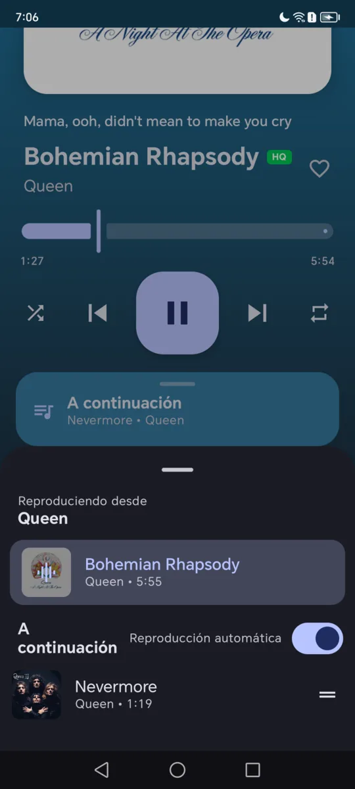
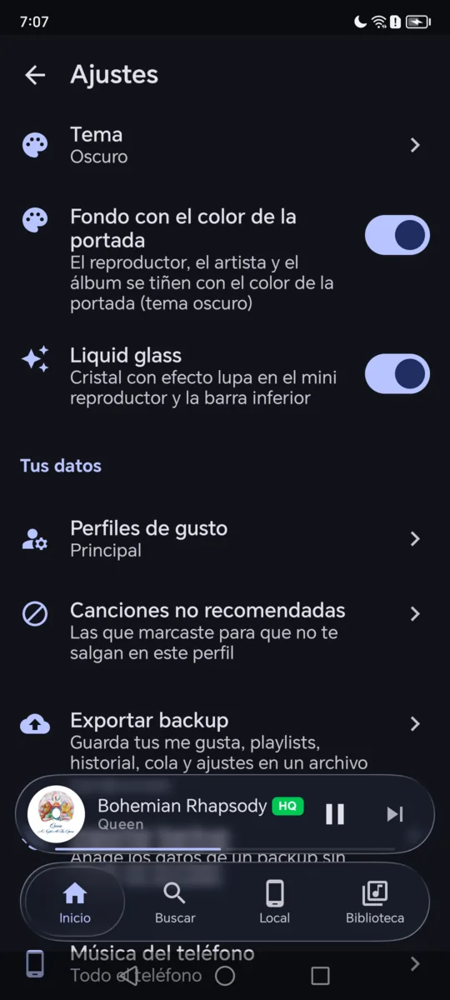

Documentación
Cómo usar ExtMusic 1.4.2, con los nombres exactos de cada opción de la app.
1Primeros pasos
Descarga el APK desde GitHub e instálalo: los pasos están en Versiones → Instalar. No hace falta cuenta. Al usar la app por primera vez te pedirá, solo cuando haga falta:
| Petición | Cuándo | Para qué |
|---|---|---|
| Notificaciones | La primera vez. | Controles de reproducción y avisos de descargas y de versiones nuevas. |
| Reproducción en segundo plano | Cuando la app lo necesita. | «Para que la música siga sonando con la app cerrada». Puedes elegir «Ahora no». |
| Acceso a la música | Al abrir la pestaña Local. | Leer la música guardada en el teléfono. |
La app tiene cuatro pestañas: Inicio, Buscar, Local y Biblioteca. Los Ajustes están en el engranaje de Inicio.
2Escuchar
- Buscar: canciones, artistas y álbumes de YouTube Music, con los filtros Canciones y Artistas. Sin iniciar sesión.
- Cola: toca «A continuación» en el reproductor. Arrastra el asa de una canción para reordenarla o quítala (puedes deshacerlo).
- Reproducción automática (Ajustes → Reproducción): al terminar la cola, sigue con canciones parecidas. También se activa desde la propia cola.
- Temporizador de sueño: en el menú ⋮ del reproductor.
- Barajar al reproducir una lista: la canción que elijas suena primero y el resto en orden aleatorio.
- Ocultar canciones explícitas: no aparecen en búsquedas, recomendaciones ni listas.
- Seguir sonando al cerrar la app: si lo apagas, la música se detiene al quitar la app de recientes.

3Letras
Las letras sincronizadas vienen de LRCLIB y, si no hay, de KuGou. La app también usa archivos .lrc locales. En el reproductor, toca «Ver completa» en la tarjeta de la letra para verla a pantalla completa.
| Opción | Qué hace |
|---|---|
| Mostrar letras | Muestra letras sincronizadas en la pantalla de reproducción. |
| Tamaño del texto | Tamaño del texto de las letras. |
| Sincronía de la letra | Si la letra va adelantada (p. ej. con auriculares Bluetooth), súbelo. |
| Guardar letras | En Ajustes → Descargas: guarda las letras para verlas sin conexión. |
4Descargas
Descarga una canción desde su menú, o un álbum entero con el botón de descarga de su página. Para quitarla, «Eliminar descarga».
| Opción | Qué hace |
|---|---|
| Calidad de descarga | Calidad de los archivos descargados (por ejemplo, Normal · ~70 kbps · Opus). |
| Solo con WiFi | Las descargas esperan a tener WiFi. |
| Descargar al dar me gusta | Cada canción que marques con el corazón se descarga sola. |
Si reinicias el teléfono con descargas pendientes, se reanudan solas.
5Calidad y batería
| Opción | Qué hace | Notas |
|---|---|---|
| Calidad de streaming | Ahorro de datos (~50 kbps), Normal (~70 kbps · Opus) o Máxima (~160 kbps · Opus). | Para escuchar sin descargar. |
| Normalizar volumen | Sube las canciones flojas y suaviza los picos. | Android 9 o superior. |
| Ahorro de batería | El chip de audio decodifica la música en vez del procesador. Usa AAC (~128 kbps), el formato que admiten más teléfonos. | No funciona con Normalizar volumen, Dolby Atmos ni efectos de sonido de otras apps. |
6Música del teléfono
- Abre la pestaña Local y toca «Conceder permiso» para que la app pueda leer tu música.
- Por defecto busca en todo el teléfono. Para limitarlo a una carpeta: Ajustes → Tus datos → Música del teléfono → Carpeta de música. Para volver a todo el teléfono, Usar todo el teléfono.
- Si añades canciones nuevas al teléfono, en ese mismo menú usa Buscar música nueva («Vuelve a revisar el teléfono»).
7Biblioteca y perfiles
- Me gusta y playlists: en la pestaña Biblioteca. «Crear playlist» para empezar una.
- Importar de YouTube (icono de enlace en Biblioteca): pega el enlace de una playlist o álbum de YouTube o YouTube Music, pública o no listada (las privadas no se pueden). Si ya la importaste, se añaden las canciones nuevas.
- Perfiles de gusto (Ajustes → Tus datos, o «Principal» en Inicio): cada perfil tiene su propio historial, recomendaciones, Me gusta y playlists. Las descargas son de todos. Hasta 5 perfiles; uno nuevo empieza vacío y no cambia lo que te sale en los demás.
- No recomendar: desde el menú de una canción. Las marcadas están en Ajustes → Tus datos → Canciones no recomendadas.
8Copias de seguridad
- Exportar backup (Ajustes → Tus datos): guarda tus me gusta, playlists, historial, cola y ajustes en un archivo comprimido
.extmusic, donde tú elijas. - Para pasar tu biblioteca a otro teléfono, copia ese archivo y usa Importar backup: añade los datos de un backup sin borrar los actuales.
- Después de importar: si usabas una carpeta de música, vuelve a elegirla. La cola importada ya está en el reproductor.
La copia de seguridad automática de Android no incluye los datos de ExtMusic: exportar el backup es la única forma de guardarlos. Más detalle en Privacidad → Qué se guarda.

9Apariencia
- Tema: Claro, Oscuro o AMOLED (negro puro).
- Fondo con el color de la portada: el reproductor, el artista y el álbum se tiñen con el color de la portada (en tema oscuro).
- Liquid glass: cristal con efecto lupa en el mini reproductor y la barra inferior. La refracción necesita Android 13 o superior; en versiones anteriores se ve un desenfoque normal.
10Actualizaciones
En la versión descargada de GitHub, Ajustes → Acerca de tiene Buscar actualizaciones y Buscar al abrir la app (una vez al día como mucho, sin avisar si no hay nada). Cuando hay una versión nueva, la app la descarga, la comprueba y te pide confirmar la instalación; la música se para un momento mientras se instala y tu música, listas y ajustes se quedan como están.
La primera vez, Android te pedirá permitir que ExtMusic instale actualizaciones: «ExtMusic lo usa únicamente para instalar sus propias versiones». Cómo se verifica cada actualización: Privacidad → Actualizaciones verificadas.
11Solución de problemas
| Problema | Qué hacer |
|---|---|
| La música se para al cerrar la app | Comprueba que Seguir sonando al cerrar la app está activado y permite la Reproducción en segundo plano cuando la app lo pida. |
| La letra va adelantada | Sube Sincronía de la letra en Ajustes → Letras. Pasa sobre todo con auriculares Bluetooth. |
| «No se pudo importar. ¿Es privada o no tienes conexión?» | Comprueba la conexión. Las playlists privadas no se pueden importar; hazla pública o no listada. |
| «Ese enlace no es de una playlist de YouTube» | Pega el enlace de una playlist o de un álbum de YouTube o YouTube Music. |
| Tras importar un backup no aparece mi música local | Vuelve a elegir la carpeta en Ajustes → Tus datos → Música del teléfono → Carpeta de música. |
| Aviso de «Ahorro de batería»: el chip de audio falló | El teléfono falló al decodificar con su chip de audio y la app ahorra batería por otra vía. Apaga y enciende Ahorro de batería para reintentar. |
| La app ocupa demasiado | En Ajustes → Tus datos → Almacenamiento, baja el Máximo de audio temporal o usa Liberar espacio (no toca descargas, Me gusta ni playlists). |
| «La descarga no coincidía con la publicada…» o «La APK no era válida…» | La app ya borró el archivo por seguridad. Toca para reintentar; si se repite, revisa la conexión o descarga el APK desde Versiones. |
| «No se pudo actualizar. Revisa tu conexión.» (Inicio) | Comprueba la conexión y desliza hacia abajo en Inicio para actualizar. |
12Preguntas frecuentes
- ¿Necesito una cuenta de Google?
- No. ExtMusic no tiene cuentas ni inicia sesión en YouTube.
- ¿Es gratis?
- Sí. Es software libre bajo GPL-3.0-or-later, sin anuncios ni compras.
- ¿Funciona sin internet?
- Sí, con las canciones descargadas y con la música del teléfono. Para buscar y escuchar YouTube Music necesita conexión.
- ¿Dónde se publica?
- Por ahora, solo en GitHub Releases. Las copias de otros sitios no son oficiales.
- ¿Está afiliada a YouTube o a Google?
- No, ni cuenta con su aprobación. Usa NewPipeExtractor para obtener el audio de YouTube Music, así que depende de que YouTube siga siendo accesible de esa forma.
- ¿Qué datos envía?
- Ninguna analítica. Los servicios a los que se conecta y lo que reciben están en Privacidad → Conexiones de red.